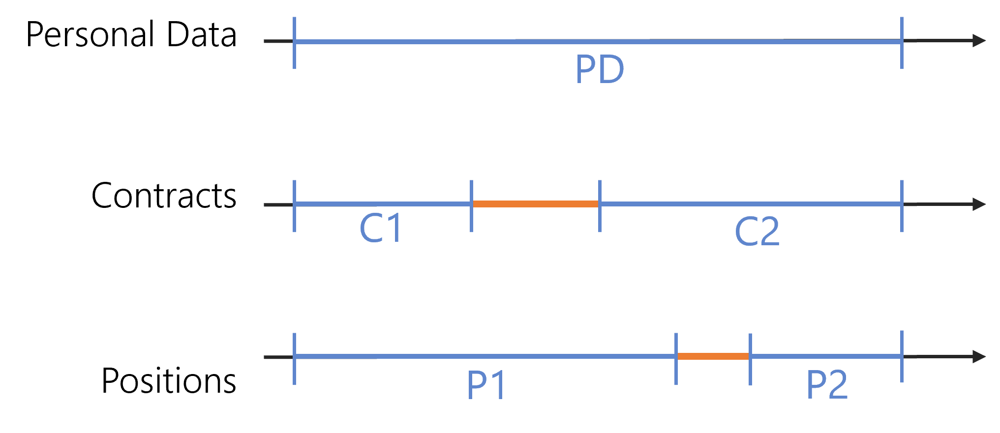

Record Section
Record sections shape identity data for a given entity type, by grouping properties into sections, for example personal data, contract or position.
Record sections impact the generation of identities' contexts which contain users' dimension values valid on a given period of time. The aim is to simplify the application of the role model' rules for provisioning.
Thanks to this data organization in sections, the identities of a given entity type can be modeled by more than one context over time, even simultaneously. This means that users can have more than one contract, or position, at a time, and that data changes can be anticipated.
See the Position Change via Records for additional information on identity modeling.
Configuration recommendations:
As record sections cannot be configured without a
Context Rule
, Netwrix Identity Manager (formerly Usercube)recommends starting with the configuration of the context rule before configuring record sections.
Netwrix Identity Manager (formerly Usercube)recommends defining at least two record sections: a default section for the properties shared by all records, and another section for a given set of properties which differentiate between records. The default section must contain zero properties, the shared properties are those that are not defined in the other section(s).
For example, to model several positions for a single user, we configure the default record section to contain the properties shared by all positions such as personal data, and we configure the position section to contain the properties specific to each position. Similar to the position section, we can also typically configure a section for contracts.
Examples
The following example models users from the Directory_User entity type with three sets of properties: user properties, contract properties and position properties. All created records will be resources from the Directory_UserRecord entity type.
The properties from the contract (or position) section are the properties specific to each contract (or position). The properties from Directory_User that are not specified in the record sections are the properties shared between all records, here user properties.
Each section must be defined with start and end dates, so that Identity Manager's engine is able to combine all periods of validity and apply the rules with the right input at any time.
Default section:
<RecordSection Identifier="Directory_UserRecord_Default" DisplayName_L1="User Properties" SourceEntityType="Directory_User" ResourceEntityType="Directory_UserRecord" StartProperty="StartDate" EndProperty="EndDate"> ...
</RecordSection>
Contract section:
<RecordSection Identifier="Directory_UserRecord_Contract" DisplayName_L1="Contract Properties" SourceEntityType="Directory_User" ResourceEntityType="Directory_UserRecord" StartProperty="ContractStartDate" EndProperty="ContractEndDate"> ...
<Property Property="UserType"/> <Property Property="ExternalCompany"/> <Property Property="Subsidiary"/></RecordSection>
Position section:
<RecordSection Identifier="Directory_UserRecord_Position" DisplayName_L1="Position Properties" SourceEntityType="Directory_User" ResourceEntityType="Directory_UserRecord" StartProperty="PositionStartDate" EndProperty="PositionEndDate"> ...
<Property Property="PositionIdentifier" /> <Property Property="JobTitle" /> <Property Property="OfficeNumber" /> <Property Property="Organization" /> <Property Property="Site"/> <Property Property="Title" /> <Property Property="Office" /> <Property Property="Manager" /> <Property Property="IGAManager" /> <Property Property="EffectiveIGAManager" /> <Property Property="IsMainPosition" /></RecordSection>
InstanceKeyExpression
The following example computes a unique key for each record section instance. This way, we can distinguish between contracts thanks to their identifiers, same for positions, and between user property sets thanks to a C# expression based on the start date.
Default section:
<RecordSection Identifier="Directory_UserRecord_Default" DisplayName_L1="User Properties" SourceEntityType="Directory_User" ResourceEntityType="Directory_UserRecord" StartProperty="StartDate" EndProperty="EndDate" InstanceKeyExpression="C#:record:return record.StartDate.HasValue ? record.StartDate.Value.ToString("yyyyMMdd") : string.Empty;"></RecordSection>
Contract section:
<RecordSection Identifier="Directory_UserRecord_Contract" DisplayName_L1="Contract Properties" SourceEntityType="Directory_User" ResourceEntityType="Directory_UserRecord" StartProperty="ContractStartDate" EndProperty="ContractEndDate" InstanceKeyExpression="C#:record:return record.ContractIdentifier;"> <Property Property="UserType"/> ...
</RecordSection>
Position section:
<RecordSection Identifier="Directory_UserRecord_Position" DisplayName_L1="Position Properties" SourceEntityType="Directory_User" ResourceEntityType="Directory_UserRecord" StartProperty="PositionStartDate" EndProperty="PositionEndDate" InstanceKeyExpression="C#:record:return record.PositionIdentifier;"> <Property Property="PositionIdentifier" /> ...
</RecordSection>
An instance key is required when we need to uniquely identify a context, i.e. when we may have several simultaneous contexts.
For example, an instance key is required for the position section when users can have overlapping positions.
IsDefaultBoundariesSection
The following example uses the contract start/end dates as default boundaries in users' validity period, instead of those from the default section. It may be because, for example, HR services do not enter an end date for the personal data of users on permanent contracts. So we prefer to use the start and end dates of their contracts.
Contract section:
<RecordSection Identifier="Directory_UserRecord_Contract" DisplayName_L1="Contract Properties" SourceEntityType="Directory_User" ResourceEntityType="Directory_UserRecord" StartProperty="ContractStartDate" EndProperty="ContractEndDate" IsDefaultBoundariesSection="true"> <Property Property="UserType"/> ...
</RecordSection>
Context extension
There can be some time gap where no context is defined, for example a time gap with a position but no contract or vice versa. Identity Manager offers the possibility to choose whether an existing context is to be extended to the period without context. And in case we decide to use another context and extend its values, which context should it be?

Here, we decide to extend an existing contract to the gap, for example because users' email addresses are built using the contract type to add -ext for external users. And we decide to not extend the position.
In the following example, the contract section uses SortKeyExpression to establish between existing contracts a priority order that will determine which contract should be extended to the gap. Based on this C# expression that returns a value A, B or C, the ExtendedSortKey considers as extendable only the contract(s) whose expression returns C.
The position section uses ExtensionKind set to None to block the extension mechanism.
Contract section:
<RecordSection Identifier="Directory_UserRecord_Contract" DisplayName_L1="Contract Properties" SourceEntityType="Directory_User" ResourceEntityType="Directory_UserRecord" StartProperty="ContractStartDate" EndProperty="ContractEndDate" SortKeyExpression="C#:record:return record.Main.GetValueOrDefault() && record.UserType.Id == -018 ? "C" : (!record.Main.GetValueOrDefault() && record.UserType.Id == -018 ? "B" : "A");" ExtendedSortKey="C"> <Property Property="UserType"/> ...
</RecordSection>
Position section:
<RecordSection Identifier="Directory_UserRecord_Position" DisplayName_L1="Position Properties" SourceEntityType="Directory_User" ResourceEntityType="Directory_UserRecord" StartProperty="PositionStartDate" EndProperty="PositionEndDate" ExtensionKind="None"> <Property Property="PositionIdentifier" /> ...
</RecordSection>
When not specifying any sort key nor extended sort key, Identity Manager will select a context to extend to the gap. However, it may not be functionally the most meaningful context.
Properties
| Property | Details |
|---|---|
| BoundaryKind default value: 0 |
Type
|
| DisplayName_L1 required |
Type
|
| EndProperty optional |
Type
|
| ExtendedSortKey optional |
Type
|
| ExtensionKind default value: 0 |
Type
|
| Identifier required |
Type
|
| InstanceKeyExpression optional |
Type
|
| IsDefaultBoundariesSection default value: false |
Type
|
| ResourceEntityType required |
Type
|
| SortKeyExpression optional |
Type
|
| SourceEntityType required |
Type
|
| StartProperty optional |
Type
|
Child Element: Property
A record section is a set of record properties which belong to the resource entity type.
Examples
In the following example, the position section gathers the properties Organization, Location and Title, while the default section gathers all the other properties from Directory_UserRecord.
The property Location can be extended from a context where the location is defined to a context where it is not. The two other properties cannot be extended.
See the Record Section topic for additional information.
Default section:
<RecordSection Identifier="Directory_UserRecord_Default" DisplayName_L1="Contract Properties" SourceEntityType="Directory_User" ResourceEntityType="Directory_UserRecord" StartProperty="ContractStartDate" EndProperty="ContractEndDate">
</RecordSection>
Position section:
<RecordSection Identifier="Directory_UserRecord_Position" DisplayName_L1="Position Properties" SourceEntityType="Directory_User" ResourceEntityType="Directory_UserRecord" StartProperty="StartDate" EndProperty="EndDate">
<Property Property="Organization" ExtensionKind="None" /> <Property Property="Location"/> <Property Property="Title" ExtensionKind="None" />
</RecordSection>
Properties
| Property | Details |
|---|---|
| ExtensionKind default value: 0 |
Type
|
| IsExcluded default value: false |
Type
|
| Property required |
Type
|